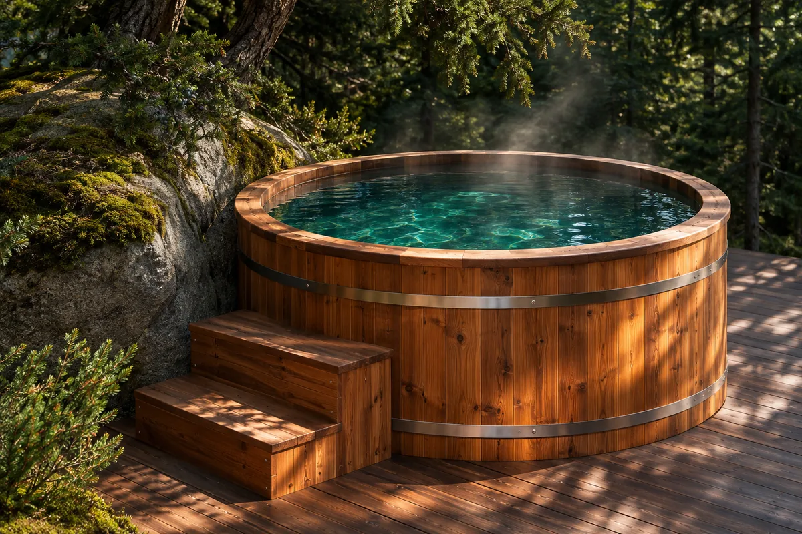
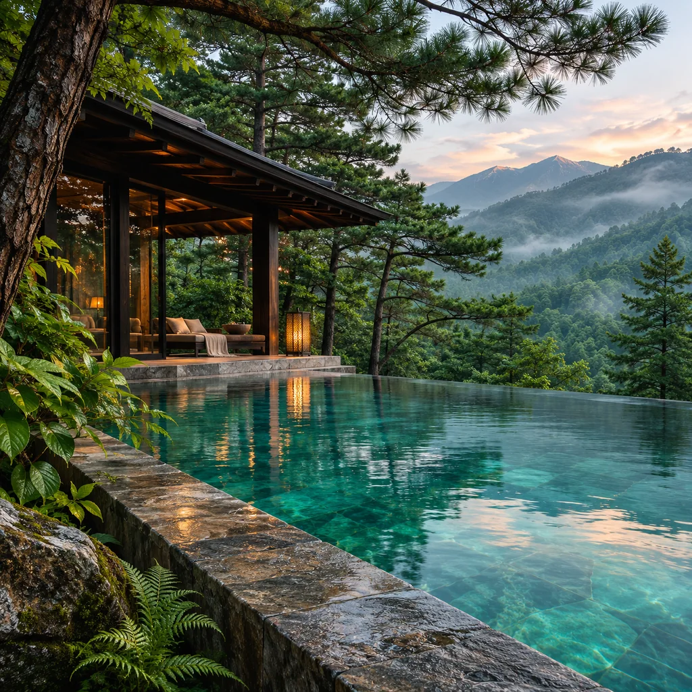
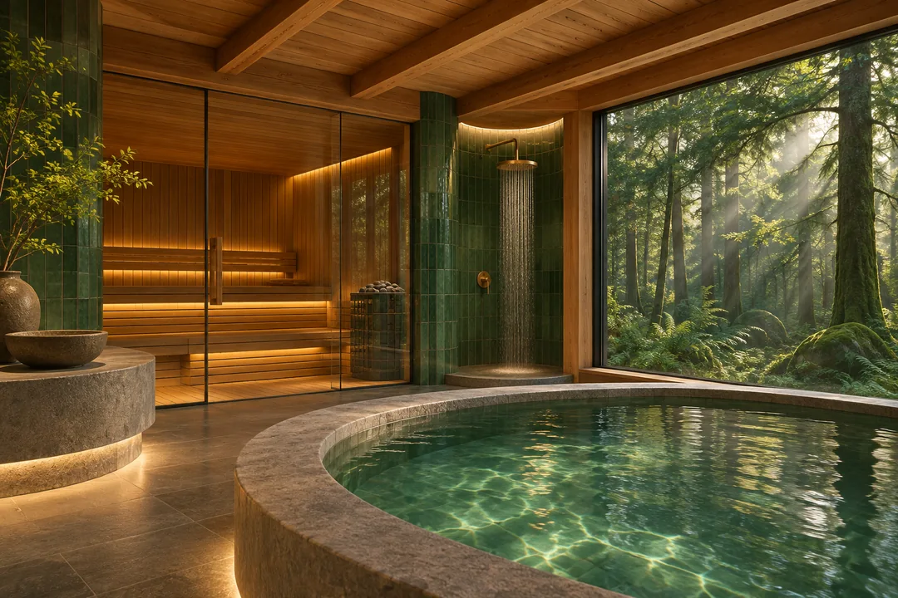
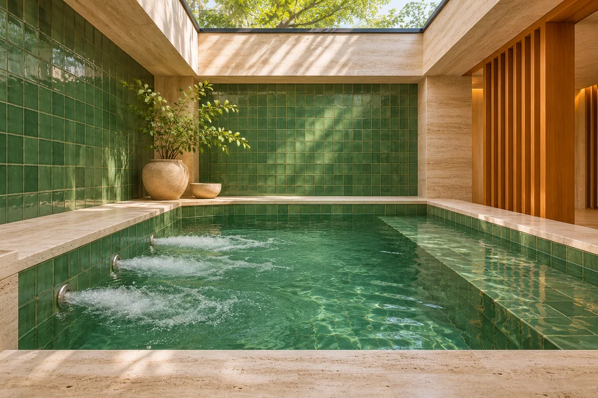

Предпроектная консультация
Подбор формата, размеров и материалов под участок и сценарий отдыха.
Купели, бассейны и термальные зоны для загородных домов и мест отдыха. Подберите решение под ваш ландшафт.


Подбор формата, размеров и материалов под участок и сценарий отдыха.

План размещения парной, душевых, купели и зоны отдыха.
График поставки, требования к подъезду и установка оборудования.

Фильтрация, подогрев, водообмен и подбор комплекта автоматики.
Проверка контура и фильтров, подготовка к холодному сезону.
Подбор нескольких зон по вместимости, потоку гостей и графику обслуживания.
Сравните форматы для дома и загородного клуба. Стоимость зависит от комплектации и площадки.
Фото иллюстрируют типы решений. Детали конкретной комплектации могут отличаться.
Показано 12 из 12
Купели
Деревянная купель для открытой террасы. Диаметр 180 см.
Купели
Компактная купель для двоих с подогревом.
Купели
Овальная купель для загородного дома, со ступенями и термокрышкой.
Бассейны
Небольшой SPA-бассейн для крытой веранды или патио.
Бассейны
Модель для 4–5 человек с гидромассажной зоной.
Бассейны
Чаша для загородного клуба с отдельным техническим контуром.
Термальные зоны
Деревянная парная с остеклением и подсветкой.
Термальные зоны
Паровая кабина, тёплые сиденья и влагостойкая облицовка.
Термальные зоны
Холодная купель, душ и площадка для отдыха.
Комплектация
Комплект оборудования для поддержания температуры и чистоты воды.
Комплектация
Набор аксессуаров для открытой купели.
Комплектация
Проверка оборудования, заполнение чаши и первичная настройка.
От подбора формата до монтажа и проверки оборудования на площадке.
Тип основания, близость воды и электропитания зависят от модели. Требования проверяются после выбора оборудования.
Для такой установки выбирают наружную модель, термокрышку и подходящий режим сезонного обслуживания.
Да. По ссылке ниже доступен отдельный симулятор, где гость выбирает отдых, процедуры и трансфер.
Отдельный сценарий для загородного отеля. Посмотрите, как гости выбирают отдых, процедуры и трансфер.